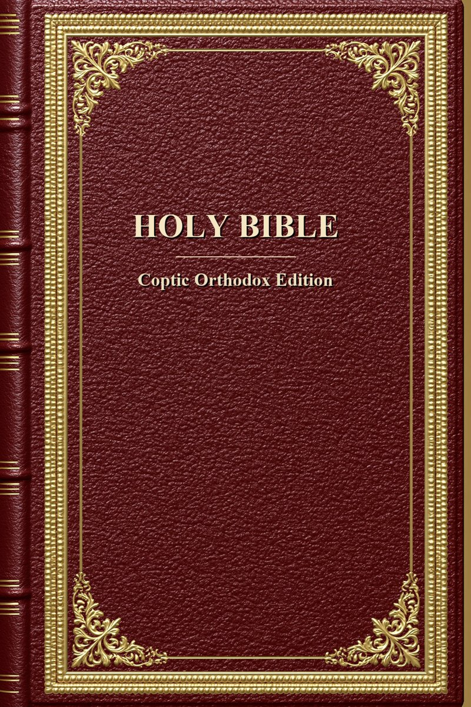
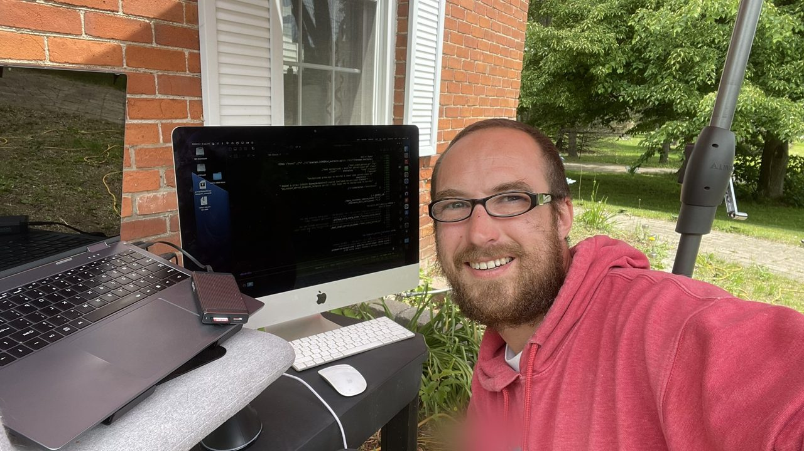
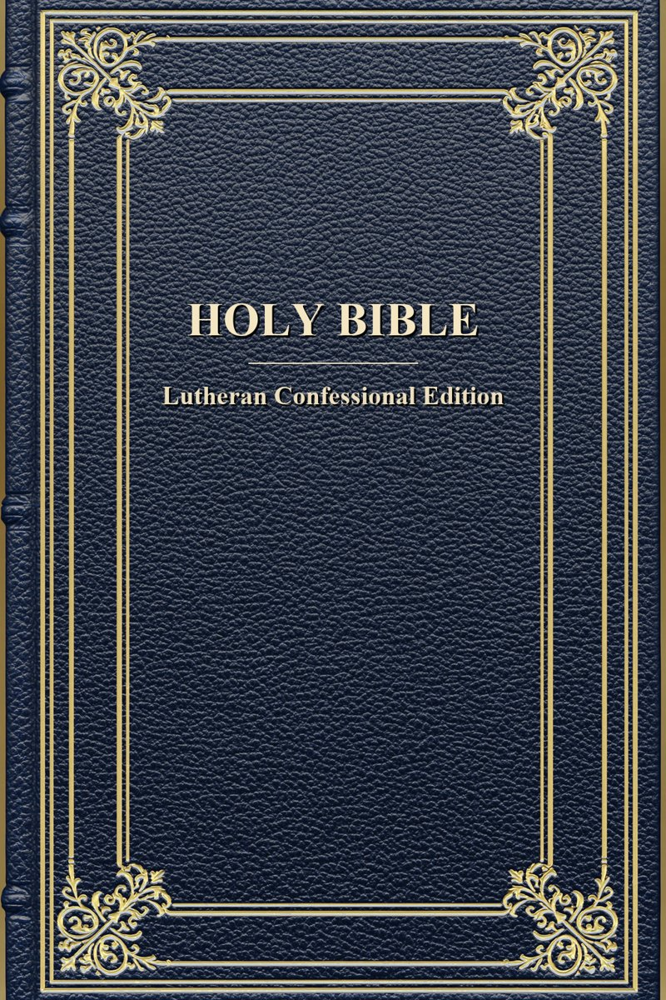
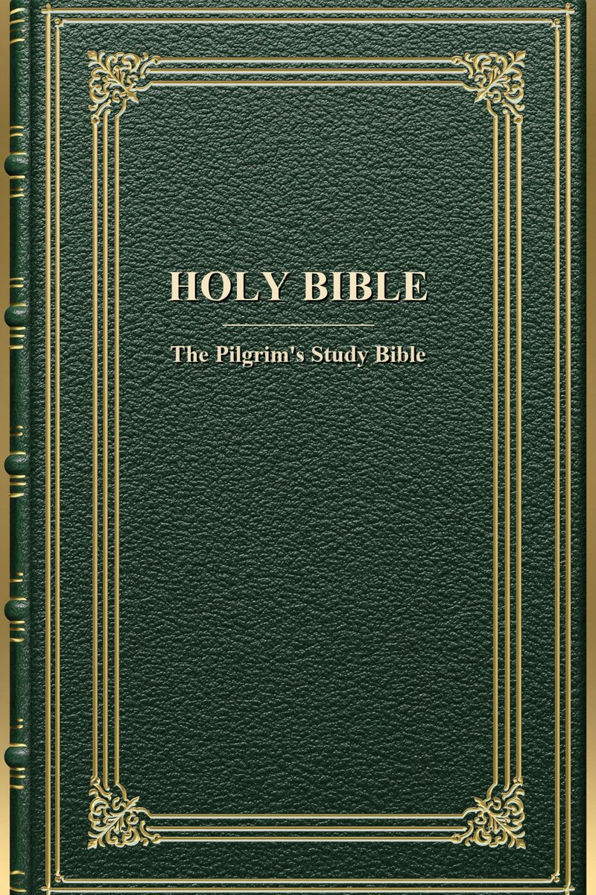
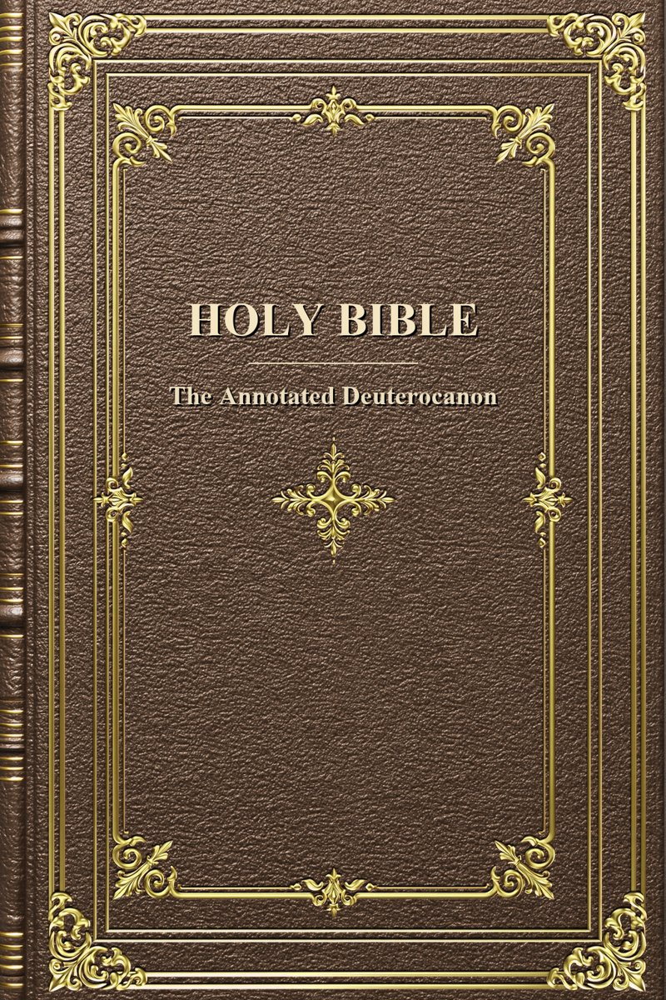
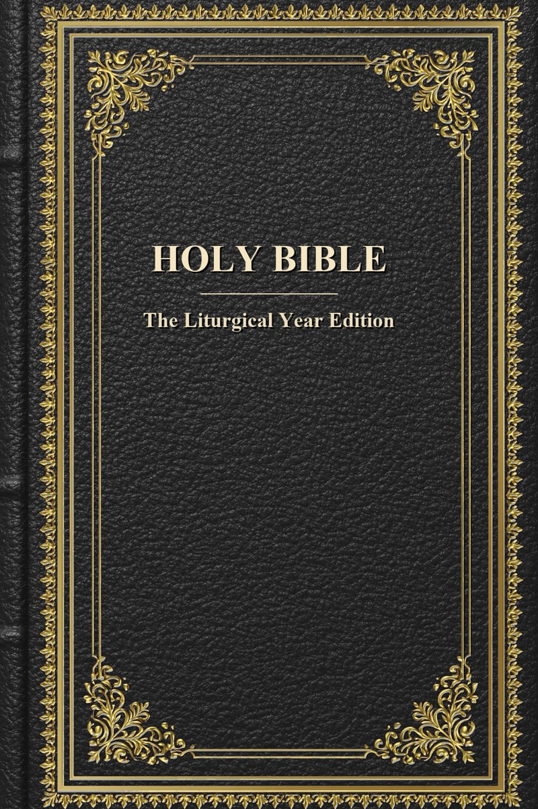

YHWH Ya’ Way
Build the Bible you’ve always wanted to hold.
A free desktop program that lets anyone — a pastor, a teacher, a parent, a curious reader — assemble their own study Bible and save it as a clean, ready-to-read ebook. It begins from one big storehouse of Scripture and study, and lets you shape it.
The Word of God is for everyone — and everything that helps you study it belongs together, in one place, not scattered across the web for you to piece together. This program gathers it all and puts it in your hands to shape, so you can come to God in a way that’s truly your own.
Get the beta → See what it does
Free forever · Windows · macOS · Linux · no account, no cloud, no tracking
The work at a glance
- 83books in one superset
- 91,733study notes, toggleable
- 5canon traditions
- 9starting editions
- 4original languages
- EPUB 3clean: 0 errors, 0 warnings
What it does
YHWH Ya’ Way gathers a large set of free study material in one place, then lets you decide what goes in. You don’t download someone else’s finished Bible — you build your own, step by step, through a friendly wizard. No code, no command line, no editing files by hand.
When your edition is ready, the program produces a polished EPUB 3 ebook that opens in Apple Books, Google Play Books, Kobo, and any standards-compliant reader. Every edition is held to the W3C epubcheck validator’s strictest mark: zero errors and zero warnings.
-
Pick your canon & tradition
Choose from Ethiopian Tewahedo, Catholic, Eastern or Coptic Orthodox, Anglican, Lutheran, Reformed/Evangelical, or Jewish/Tanakh — or start from a scholarly profile.
-
Toggle the notes you want
Turn whole families of study notes on or off for your edition: cross-references, Hebrew & Greek word studies, historical and cultural background, literary analysis, commentary by tradition, and more — for the whole Bible, or down to a single book, chapter, or verse.
-
See the original languages
Clickable verse popups can show Hebrew (Westminster Leningrad Codex), Greek (Septuagint and Byzantine New Testament), Latin (Clementine Vulgate), and Arabic (Van Dyck translation).
-
Make it beautiful
Choose a visual theme and design your cover, title page, and imprint — your own title, publisher name, copyright, and editors’ names.
-
Add reading plans
Optionally bundle daily or monthly reading schedules as navigation aids inside your edition.
-
Export a clean ebook
A standards-clean EPUB 3, validated to zero errors and zero warnings — ready to read, share, or shelve.
How you make it yours
The idea is simple: one storehouse, and your own way through it.
Underneath the program lives a single 83-book superset — the full Ethiopian Tewahedo canon, which already contains everything in the Protestant, Catholic, and Orthodox Bibles, plus the books distinctive to the Ethiopian tradition. Everything is stored once, in one place, under one numbering. You don’t hunt across different editions and source files; you simply decide what to keep.
Each edition you build is your own chosen subset of that storehouse:
- Your books. Choosing a tradition’s canon decides which books appear — from the 39-book Tanakh and the 66-book Protestant Bible, through the Catholic and Orthodox canons, up to the full 83-book Ethiopian canon.
- Your notes. You choose which families of study notes are included, so the apparatus matches your purpose — a spare devotional, or a dense scholarly edition.
- Your tradition. You set which stream of commentary is featured, so the same passage can be read through, say, a Catholic or a Reformed lens.
- Your look. You pick a theme, design the cover and title pages, and add your own title, publisher name, copyright, and the names of any editors or contributors.
And “yours” reaches all the way down. The builder follows the shape of a Bible — the whole, its books, each book’s chapters, down to a single verse — and you set your notes and popups at any of those levels. Turn a family of notes on across the whole Bible, off in one book, back on for a single chapter, or flip a single note by hand; choose which original-language popups appear for the whole Bible, a book, a chapter, or one verse. The rule is simple — the most specific choice wins — and a finished edition stays byte-for-byte identical to the standard one wherever you change nothing.
From one storehouse, you shape your own edition — your books, your notes, your tradition, your design.
What’s inside the storehouse
The books
One 83-book Ethiopian Tewahedo superset — every book of the Protestant Bible, the Catholic and Orthodox deuterocanonical books, and the texts treasured especially in the Ethiopian tradition: 1 Enoch and 2 Enoch, Jubilees, the three books of Meqabyan, 4 Baruch, the Prayer of Manasseh, 1 and 2 Esdras, and 1 Clement. Five canon shapes are drawn from this one corpus — Tanakh, Protestant, Catholic, Eastern Orthodox, and the full Ethiopian Tewahedo.
The study notes
91,733 study notes, organized into families you can toggle on or off: original-language word studies (drawing on Strong’s Hebrew and Greek), textual notes, cross-references, historical and cultural background, literary analysis, commentary across traditions (including patristic voices such as Cyril of Alexandria and Ephrem the Syrian), comparative readings, devotional and liturgical notes, topical indexes (from Nave’s and Torrey’s), and dictionary entries (from Easton’s).
The verse popups
Click a verse to see it in its original tongues — Hebrew (Westminster Leningrad Codex), Greek (Septuagint and the Byzantine New Testament), Latin (Clementine Vulgate), and Arabic (Van Dyck translation). You choose which of these appear in each edition.
Reading the notes — the symbols, and how you choose them
Every study note appears in the text as a small inline symbol you can tap to open it. The symbol tells you, at a glance, what kind of note it is — every note in a family shares one mark. Finer kinds within a family (Patristic, Rabbinic, or Ethiopian commentary, all under ◇) are told apart by a short label, not a different glyph, so the page stays calm.
Language
Original-language word studies — Hebrew, Greek, Aramaic, Geʽez, Latin, Syriac, Arabic; grammar and rendering.
Textual & critical
Variant readings and manuscript witnesses — Dead Sea Scrolls, Septuagint, Samaritan, Ethiopic.
Cross-references
Internal parallels, Old-Testament-in-New citations, allusions and echoes, thematic links.
Historical & cultural
Ancient Near-Eastern and Greco-Roman background, geography, persons, customs — and dictionary entries.
Literary
Structure and form — chiasm, narrative, genre, poetry, source criticism.
Commentary & tradition
Interpretive readings — Patristic, Rabbinic, Orthodox, Catholic, Reformation, Ethiopian, and modern.
Comparative religion
Pseudepigrapha and Second-Temple, Qurʼanic, Gnostic, and Geʽez-divergence parallels.
Devotional
Life-application and prayer prompts for devotional reading.
Liturgical
Ethiopian Tewahedo and Christian-year lectionary placements, and Torah-portion readings.
Apologetic
Harmonization of apparent contradictions and alleged difficulties.
Modern issues
Ethics, and science-and-faith engagement.
Pedagogical
Section summaries and hard-passage flags.
Visual & media
Maps, genealogies, charts, and tables.
Edition-distinctive
Typological, allegorical, Marian, and mystical readings of particular traditions.
Topical
Topical-concordance groupings from Naveʼs and Torreyʼs — every verse on a theme.
Choosing them — the navigator
The builder’s navigator lets you walk your edition exactly like a Bible: the whole Bible, then a book, then a chapter, then a single verse. At each level you toggle note-symbol families (and the finer kinds inside them) and pick which original-language popups appear. The rule is most specific wins — turn cross-references off across the whole Bible but back on just in Genesis, strip every note from one hard chapter, or flip a single note on or off by hand. A bulk choice at a coarser level clears the finer ones inside it, so you are never left with hidden, contradictory settings.
An honest note. The notes are real, drawn from named public-domain sources — nothing is invented for you. AI-drafted commentary exists only as an opt-in kind, switched off in every edition unless you deliberately turn it on, and reviewer-curated.
How it was made
The program was built to be honest and durable, and easy to maintain. At its heart is Python, with the Scripture, the notes, and every edition’s recipe stored in plain, human-readable text you could open and read yourself. There is no hidden database — nothing you can’t open and read yourself.
When you build an edition, a straightforward pipeline does the work:
- Gather the verses for the canon you chose.
- Weave in only the families of notes you asked for.
- Apply your theme, covers, and title pages.
- Package everything into a standards-compliant EPUB 3.
- Validate against W3C epubcheck — zero errors, zero warnings, every time.
All of this happens on your own machine. There is no cloud, no server, and no internet connection required to build your Bible — the full 83-book storehouse travels inside the program.
The story behind it
I’m Bogdan — Gringo Boggy. I wanted a free English study Bible with the full Ethiopian Tewahedo canon and notes worth reading, couldn’t find one, and built it with Claude — starting with no programming background.

It started in the Claude mobile app as a single EPUB. Two weeks later it was an early desktop edition on Claude 4.7; today it’s the full program, built in VS Code with Claude Code — about a month and a half from the first EPUB to here.
A few numbers from the build: 604 sessions, 97,432 messages, and 193.5 million tokens over 27 days — roughly 335× the word-count of The Lord of the Rings — across two machines (a 16 GB mini-PC and the 2017 iMac).
Where it comes from
This work builds on generations of public-domain scholarship. The materials fall into a few clear groups, each with an account of where it came from — explained once and plainly, rather than buried in a thousand links.
Bible texts & languages
The base text is the World English Bible (public domain). Verse popups draw on the Westminster Leningrad Codex (Hebrew), the Septuagint and Byzantine Majority Text (Greek), the Clementine Vulgate (Latin), and the Van Dyck Arabic — alongside other public-domain or openly licensed texts such as the King James Version, Douay-Rheims, and the 1917 JPS Tanakh. All are public-domain or openly licensed, gathered chiefly through eBible.org.
Commentary & reference works
The study apparatus is built from classic public-domain scholarship: Strong’s Hebrew and Greek lexicons, the Treasury of Scripture Knowledge, Nave’s Topical Bible, Torrey’s New Topical Textbook, Easton’s Bible Dictionary, and patristic commentary from voices such as Cyril of Alexandria and Ephrem the Syrian. The Ethiopian texts 1 Enoch and Jubilees come from R. H. Charles’s landmark early-twentieth-century translations. No modern (post-1929) copyrighted translation or commentary is included.
Cover art
The cover designs were made by the publisher using AI — a master set generated with the image model Midjourney, then refined through a hue-shift process into five styles across five colours, twenty-five designs in all. The program composes your title onto the design you choose: “HOLY BIBLE” with your edition’s name beneath it. Every image is optional: keep a design, import your own for the whole Bible or a single book, or leave it off entirely.
Fonts
Type is restricted to fonts under the SIL Open Font License 1.1 (such as Noto Serif and Sans Ethiopic), which may be embedded in ebooks freely.
Full, per-source attribution travels with the program, so the origin of every text and reference can be traced.
Choose your cover
Five styles, five colours — twenty-five designs in all (a few shown here). Pick one and the program letters your title onto it: “HOLY BIBLE” with your edition’s name beneath, sized to fit. Prefer your own art? Import any image instead — for the whole Bible, or even a single book — or leave it off entirely.




A Bible that tells the truth about itself
Every edition you build opens with a “Your Edition” page — an honest account of what is actually inside your book, written from your real choices rather than a boilerplate that overstates. No edition claims more than it carries.
- Your name and your words. The title you gave the edition, and a short note in your own voice about why you built it this way.
- What’s inside, counted honestly. The real number of study notes in this build, and how many fall in each book — not a headline figure borrowed from the full storehouse.
- The languages you kept. Which original-language verse popups — Hebrew, Greek, Latin, Arabic — actually appear in your edition.
- A symbol legend that matches. The key lists only the note families you kept, with their marks, so it never names a symbol your edition doesn’t use.
The whole build agrees with itself: the counts on the page, the legend, and the notes in the text are all drawn from the very same choices you made — so the book is honestly, accountably yours.
Get the program
YHWH Ya’ Way is free, and it runs entirely on your own computer — Windows, macOS, and Linux. The first public beta is almost here — an early, complete build that will post for download very soon, with rough edges welcome and your feedback wanted.
The Download & Releases page has the download for each system, how to verify your file. Developers and the curious can also run it from source with Python 3.14+.
No account. No server. No tracking. No cost. Your work stays on your machine, and the program behaves exactly the same whether you are online or off.
A free-will offering
This program is, and always will be, free for everyone — no paid tier, no locked feature, nothing held back behind a price.
Support is optional. If you’d like to contribute, it funds continued work — keeping the program free, gathering more texts into one place, and transcribing the standalone Geʽez & Amharic Bibles from the manuscripts. It doesn’t unlock anything, and the program is yours either way.
Support on Ko-fi Give with PayPal Sponsor on GitHub
Ko-fi, PayPal, and GitHub Sponsors are all live. The program stays free regardless.
About & faith
YHWH Ya’ Way started small and personal. I just wanted one study Bible of my own — an Ethiopian Bible in English, the full Tewahedo canon, with notes worth reading — and there wasn’t one that was free and easy to get hold of. So I set out to make that single Bible for myself.
It grew from there. One Bible became a whole storehouse of Scripture and study, and the storehouse became a tool anyone could use to build their own. The idea underneath never changed: that all of this should sit in one place, free and open to everyone, and bend to the person using it — so each of us can come to God in our own way.
License & attribution
The program — the original study notes and their selection, the apparatus and taxonomy, the editorial work, and all of the source code — is © 2026 Bogdan Zorlescu. All rights reserved. The code is source-available: you may read it, but it is not released under an open-source license.
The underlying Scripture and reference works are another matter entirely. The biblical texts, the lexicons, the cross-references, and the classic commentary are all in the public domain or openly (Creative Commons) licensed. The copyright on the program does not — and cannot — restrict them; anyone remains free to use those underlying sources independently, as people always have.
Full per-source attribution is documented and travels with the program, so the origin of every text and reference can be traced. This work asserts no trademarks; “Ethiopian Tewahedo” is used descriptively, to name the church and canon it honors.